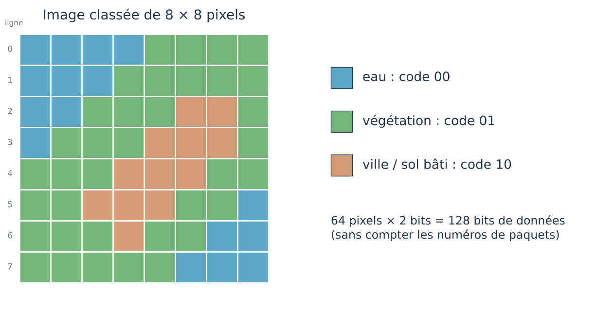
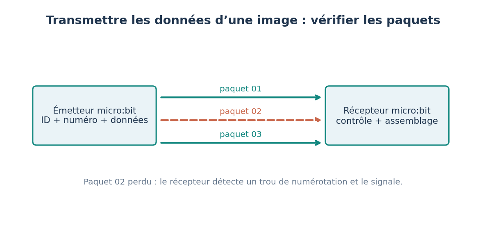

5′
1. Je m’interroge
Notre « satellite » a photographié une petite zone et l’a classée en trois catégories : eau, végétation, ville.
Comment envoyer cette image sous forme de nombres ?

Je vais coder une image de 8 × 8 pixels en binaire et la découper en paquets numérotés.
Objectif : Je vais coder une image de 8 × 8 pixels en binaire et la découper en paquets numérotés.
Je réussis si : Je code une ligne de l’image en 16 bits, j’écris le paquet correspondant et je calcule le nombre total de bits.
Notre « satellite » a photographié une petite zone et l’a classée en trois catégories : eau, végétation, ville.
Comment envoyer cette image sous forme de nombres ?

Chaque pixel est codé sur 2 bits : eau = 00, végétation = 01, ville = 10. Une ligne de 8 pixels donne donc 16 bits.
Les données sont découpées en paquets numérotés. Le numéro permet au récepteur de repérer les paquets manquants et de demander leur retransmission. Un protocole de communication fixe ces règles.
Mots-clés : paquet, numéro de séquence, perte, retransmission, protocole, groupe radio, débit

La mesure du capteur est convertie en nombres, stockée, puis envoyée par radio vers une antenne au sol, en plusieurs morceaux appelés paquets. Pendant le trajet, un paquet peut être perdu ou abîmé. Pour reconstituer les données, chaque paquet porte un numéro : le récepteur repère ainsi les numéros manquants et peut demander de les renvoyer. Un satellite dispose d’une énergie limitée (panneaux solaires et batterie) : il faut arbitrer entre le nombre de mesures, le volume de données et l’énergie. Dans notre maquette, deux cartes micro:bit reliées par radio simulent seulement ce principe.
Fiche de connaissances : Comment des données peuvent-elles nous parvenir sans erreur ? →
Par deux, un élève joue le satellite, l’autre la station au sol.
Ce que je dois produire : Image reconstituée et liste des paquets demandés.
Matériel : Image 8 × 8, petits papiers, crayons de couleur.
Sans numéro, la station ne saurait pas où placer chaque ligne.
J’écoute, j’explique mes choix et j’accepte de changer d’avis quand les preuves l’exigent.
Objectif : Coder une information en binaire ; structurer un paquet (numéro + données).
Programme : Thème 2 « Structure, fonctionnement, comportement : des objets et des systèmes techniques à comprendre » : échanges de données ; repère de 4e sur la circulation de l’information.
Déroulé : S’interroger 5 min ; Enquêter 20 min ; Retenir 8 min ; Agir 17 min ; Bilan 5 min.
L’image est reconstituée complète après la demande des deux paquets manquants ; l’élève explique le rôle du numéro.
Point de vigilance : L’atelier débranché précède la programmation : il fait comprendre le protocole avant de le coder.